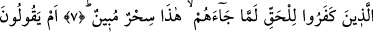

BEN SADECE
APAÇIK BİR UYARICIYIM
Bismillâhirrahmânirrahîm
1. Ha. Mîm.
2. Bu Kitap aziz ve hakîm olan Allah tarafından indirilmiştir.
3. Gökleri, yeri ve ikisi arasında bulunanları biz, şüphesiz yerli yerince ve belli bir
süre için yarattık. İnkâr edenler, uyarıldıkları şeylerden yüz çevirmektedirler.
4. De ki: Söylesenize! Allah’ı bırakıp taptığınız şeyler yeryüzünde ne
yaratmışlar; göstersenize bana! Yoksa onların göklere ortaklıkları mı vardır? Eğer
doğru söyleyenlerden iseniz, bundan evvel (size indirilmiş) bir kitap yahut bir bilgi
kalıntısı varsa onu bana getirin.